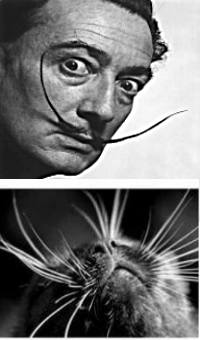

Если сравнить кошку с другими домашними животными, можно заметить, что у нее самые большие глаза относительно размеров тела.
Уже давно ученые заметили уникальную особенность кошки — бинокулярное (стереоскопическое) зрение. Это свойство определяется необычным расположением глаз: они находятся спереди, по обе стороны от носа, и у животного есть возможность рассматривать интересующие его предметы под углом 205° в одном и том же направлении при одновременном пересечении поля зрения в центральной точке. Это свойство позволяет кошкам безошибочно определять расстояние до того или иного предмета. Кроме этого, при таком устройстве глаз животное получает возможность видеть то, что расположено не только непосредственно перед ним, но и по обе стороны.
Читать дальше

Усы — волосы, растущие у человека на верхней губе. Все просто и понятно.
Иное дело кошка. У нее усы — и не усы вовсе, а, скорее, трансформированные рецепторы, органы чувств, воспринимающие малейшие изменения окружающей среды.
Вибриссы (лат. vibrissae, от vibro — колеблюсь, извиваюсь) – длинные, жесткие осязательные волосы, выступающие над шерстным покровом. Вибриссы в несколько раз длиннее и толще обычных волос. Более длинные и чувствительные находятся над верхней губой по четыре ряда с обеих сторон от носа, причем верхние два ряда могут двигаться независимо от нижних. Вибриссы покороче располагаются на щеках, на подбородке и над глазами, на щиколотках передних лап и на хвосте, есть они и между подушечками на лапах.
Читать дальше
Основной функцией мышц является обеспечение возможности движения для всех частей тела кошки. Существует два типа мышц - поперечнополосатые и гладкие. Гладкие мышцы находятся во внутренних органах, таких как кишечник, желудок, мочевой пузырь. Они не контролируются кошкой, функционируя "самостоятельно". Их работа автоматически регулируется таким образом, чтобы удовлетворить потребности организма. Поперечнополосатые мышцы преимущественно прикреплены к скелету. Все их движения находятся под сознательным контролем кошки. Они обеспечивают движение всех частей тела, позволяя совершать такие действия, как, например, ходьба, еда, виляние хвостом, поворот глаз и т.д.
Мышцы крепятся к костям жесткой волокнистой тканью, называемой сухожилиями. Сухожилия начинаются на мышцах, а заканчиваются на кости. Хорошим примером является ахиллово сухожилие, которое, соединяя мышцы нижней задней конечности (икроножная мышца) с костью, формирует лодыжки.
Читать дальше
Кожа и шерсть кошки – зеркало здоровья. Шерсть и кожа выполняют роль буфера и предохраняют организм от внешних воздействий (ультрафиолет, механические, химические повреждения и микроорганизмы).
Верхний слой кожи называется эпидермисом. Мы можем сравнить строение эпидермиса с кирпичной стеной, где клетки (эпителиоциты) являются "кирпичиками", а керамидные вещества являются "раствором". При оптимальном снабжении кожи жирными кислотами вырабатывается достаточное количество керамидных веществ, и "кирпичики" клеток крепко держатся в "стене".Это и обеспечивает барьерную функцию кожи, то есть - сохранение внутренней среды организма и защита от внешних воздействий.
Читать дальше
Мозг кошки потребляет 20% крови, перегоняемой сердцем Гормоны регулируют физиологические функции организма и поведение. Кошки живут не только инстинктами - они вполне обучаемы
Все органы чувств и железы, вырабатывающие гормоны, передают информацию в мозг. Мозг перерабатывает химические сигналы и через нервную систему посылает команды телу. Работа мозга требует значительного расхода энергии, и, хотя вес мозга составляет менее 1% веса тела, он получает 20% крови, перегоняемой сердцем.
Гормоны, вырабатываемые мозгом, регулируют большинство функций тела. Антидиуретический гормон (АДГ) вырабатывается гипоталамусом и регулирует концентрацию мочи. Также в гипоталамусе вырабатывается окситоцин, стимулирующий процесс родов и выделение молока у кошек, и кортиколиберин, регулирующий выделение адренокортикотропного гормона. Адренокортикотропный гормон (АКТГ) заставляет надпочечники вырабатывать кортизол в ответ на стресс или опасность.
Читать дальше

Органы системы дыхания кошки устроены таким образом, что могут хорошо функционировать в различных условиях окружающей среды. Задачей этих органов является обеспечение газообмена и доставка в ткани организма кислорода. Также они служат в некоторой степени и органами выделения, так как через них удаляется из организма излишек влаги и вредные газы, и участвуют в теплообмене, потому что удаляют излишек тепла из тканей.
Дыхательная система кошки состоит из носа, носоглотки, гортани, трахеи, бронхов и легких. Легкие кошек — основной орган их системы дыхания. Это парный орган, состоящий из 2 долей (правой и левой), которые занимают большую часть грудной клетки, как у всех теплокровных животных. Они состоят из альвеол — легочных пузырьков, плотно оплетенных сеткой капилляров, которые служат проводниками при осуществлении газообмена. Дыхательные органы покрывает слизистая оболочка, выполняющая функцию их защиты.
В процессе дыхания через нос воздух поступает в гортань, оттуда — в бронхи и легкие. С этим связано нормальное функционирование системы кровообращения. Также дыхание способствует нормализации теплообмена и выведению лишней жидкости из организма.
Читать дальше
В нервной системе кошек электрические импульсы передаются по нервным волокнам, отдавая команды соответствующим органам. Для связи между нервными клетками различных органов для их координации, используются также и химические процессы. Нервная система кошки представляет собой очень сложную сеть.
У млекопитающих, нервная система состоит из нескольких сегментов. Центральная нервная система включает в себя головной мозг, мозговой ствол и спинной мозг. Периферическая нервная система включает в себя нервы, выходящие из мозга в область головы и шеи, а также нервы, находящиеся на входе и выходе из спинного мозга. Эти нервы передают сигналы центральной нервной системы другим органам тела, например, лапам и хвосту. Нервные импульсы из головного мозга проходят через спинной мозг и периферические нервы, в ткани тела кошки и тем же путем возвращаются обратно, сообщая мозгу информацию от всех частей тела.
Периферические нервы, выходящие из головного и спинного мозга, называют двигательными нервами. Эти нервы управляют мышцами, обеспечивая возможность движения, пребывания в определенных позах и рефлекторные реакции. Периферические нервы, передающие сигналы в головной и спинной мозг, называют сенсорными нервами. Они доставляют информацию (такую, как чувство боли) от органов тела в центральную нервную систему.
Читать дальше